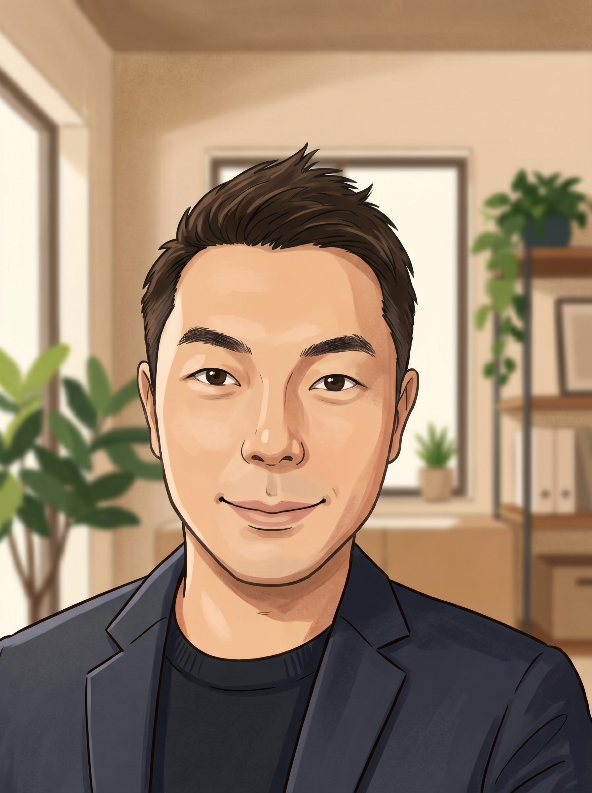
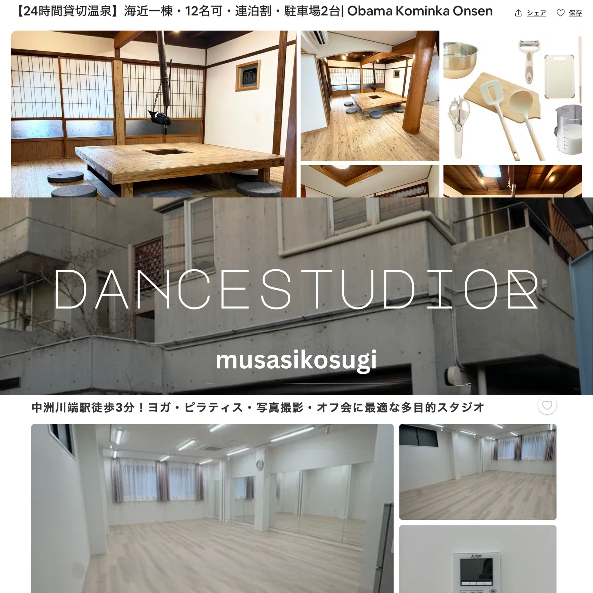
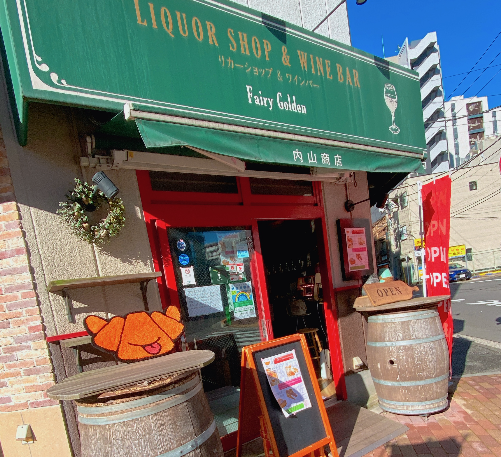
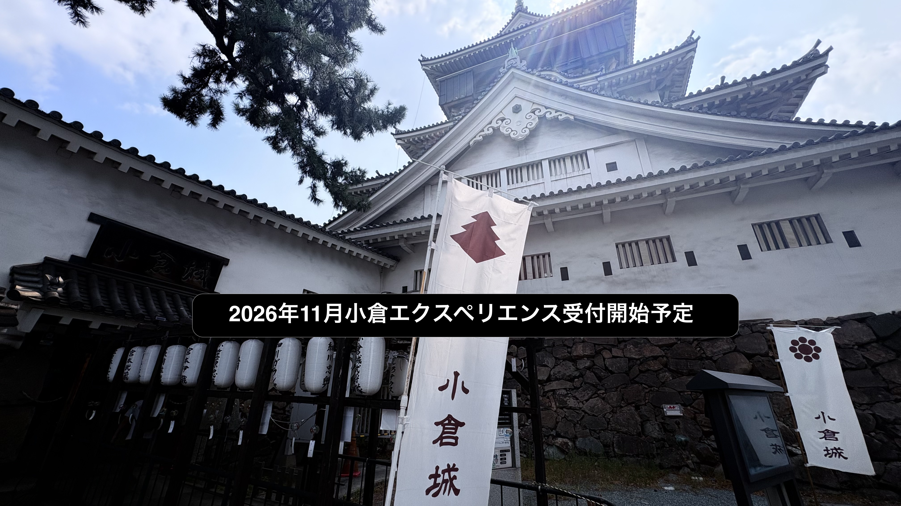
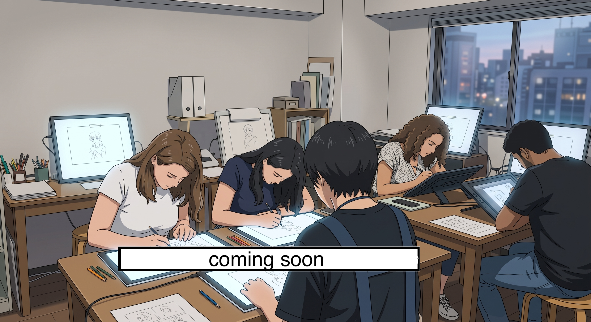

SECTION 1: ABOUT THE FOUNDER & PRODUCER

■ REPRESENTATIVE: Ryoki Koga
With a degree in Art Business from the US and a foundational career at a top-tier global investment bank, Ryoki has over 20 years of experience in Japan specializing in intellectual property, cultural preservation, and cross-cultural hospitality. His career bridges high-end VIP concierge services with deep local business development.
米国でのアートビジネス専攻と、外資系投資銀行でのキャリアを原点に、20年以上の実務経験を活かし知的財産、文化保護、異文化ホスピタリティを専門とする。ハイエンドなVIPコンシェルジュと、ディープなローカルビジネス開発の両輪を手がけるプロデューサー。
SECTION 2: TRACK RECORD & EXPERTISE

■ HIGH-END HOSPITALITY & TURNAROUND CONSULTING
Successfully produced and managed a modernized traditional Japanese house (Kominka) with a private hot spring, earning the "Superhost" and "Guest Favorite" status on Airbnb. Leveraging a deep understanding of VIP clientele, this unique business model attracted massive attention, leading to multiple business transfer (M&A) offers directly from staying guests. Currently providing turnaround consulting and management support for luxury vacation rentals (advising 4 companies this term).
プライベート温泉を備えたモダン古民家宿をプロデュース・運営し、Airbnbにてスーパーホスト、ゲストチョイスを獲得。VIP層のニーズを知り尽くした独自の運営モデルは高く評価され、宿泊ゲストから事業譲渡を希望する多数のオファーを獲得。現在も高級民泊の立て直しや運営コンサルティングの依頼が続き、今期は4社のコンサルティングを手がける。

■ FOOD CULTURE RESEARCH & LOCAL BUSINESS
Selected as an official Gourmet Producer during TikTok's launch in Japan, residing in 7 cities over 2 years to deeply research and promote Japanese gastronomy. Leveraging this culinary network and expertise, founded highly popular shaved ice and croissant shops in Tokyo (Tsukiji/Ginza) and Kyushu, famously selling out in 30 minutes. Consistently receives catering requests from luxury fashion maisons and department stores (currently operating B2B only to focus on the hospitality business).
TikTok日本立ち上げ時に公式グルメプロデューサーに選出され、2年間で全国7都市に在住。食べ歩きで得た圧倒的な知見とコネクションを活かし、東京（築地・銀座エリア）および九州にて、かき氷屋・クロワッサン屋を創業。30分で完売する人気店となり、高級メゾンのパーティ等へのケータリングや百貨店催事へのオファーが絶えない（2024年以降は民泊事業への専念のため、BtoBのみ営業）。
■ CULTURAL DIRECTION & VIP ESCORT
Building on the VIP relations expertise developed during his investment banking career, Ryoki delivers unparalleled cross-cultural hospitality. Track record includes directing cultural immersion programs for a national broadcasting network and planning exclusive seminars and cultural tours for high-ranking ASEAN officials under the Agency for Cultural Affairs. Holds an extensive history of officially escorting global VIPs, including the family of a prominent international hotel tycoon across Tokyo and Kyushu.
外資系投資銀行時代に培ったVIPアテンドの経験を礎に、最高峰のクロスカルチャー・ホスピタリティを提供。国営放送局向けの伝統芸能プログラム演出に加え、文化庁事業においてASEAN高官向けのセミナーおよび文化体験ツアーを企画・統括。世界的ホテル王のファミリーを東京や九州（大分）にてアテンドするなど、国内外の要人に対する卓越した公式アテンド実績を持つ。
SECTION 3: UPCOMING EXPERIENCES
(Launching 2026)

■ KYUSHU (KOKURA): "TIME TRAVEL KOKURA"
A fully immersive walking tour in Kokura, Fukuoka. Guided by local experts, guests will travel through time—from a Showa-era retro market to a modern mega-supermarket—decoding the evolution of Japanese daily life and pop culture.
福岡・小倉での没入型街歩きツアー。ローカルエキスパートの案内で、昭和レトロな市場から現代のメガスーパーまでをタイムトラベルし、日本の日常とポップカルチャーの進化を紐解く。

■ TOKYO: ANIMATION STUDIO EXPERIENCE
An exclusive insider experience into the heart of Japanese pop culture. Currently under development to provide global fans with an authentic look into anime production.
日本のポップカルチャーの中心部へ潜入する特別な体験。世界中のファンにアニメ制作のリアルを届けるべく現在開発中。